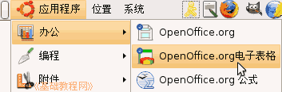
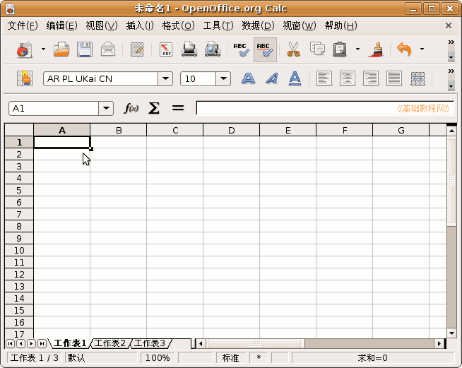
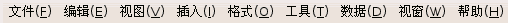
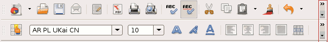
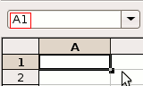
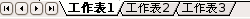

OpenOffice.org 教程之 Calc 电子表格
作者：TeliuTe 来源：基础教程网
认识窗口 返回目录 下一课Calc 是一个电子表格处理软件，电子表格由一张张工作表组成，下面我们来看一个练习；
1、启动 Calc
1）点菜单“应用程序－办公－OpenOffice.org 电子表格”；

2、Calc 窗口
1）出现一个满是格子的空白窗口，这就是一张电子表格了，第一个格子看着边框要粗一些，表示处于选中状态；

2）最上面是标题栏，默认的文件名是“未命名”，保存的时候起一个有意义的，Calc的文件称作“电子表格”；
3）再下面是菜单栏，里面是各个操作命令，记住常用的“文件”和“格式”菜单；

4）再下面是工具栏，里面是一些常用的菜单命令，在最右边的地方可以点击下拉按钮，找到其他操作按钮；

5）下面的空白是工作区，把数据输入到每个格子里，每个小格子称作一个“单元格”，由横向和纵向来坐标定位，第一个格子是A1；

6）最下边是状态栏，里面的工作表1、工作表2、工作表3，是指各个工作表；

3、练习
看一下Calc的窗口，说一下它的各个组成部分；
本节学习了 Clac 的窗口，如果你成功地完成了练习，请继续学习下一课内容；
本教程由86团学校TeliuTe制作|著作权所有
基础教程网：http://teliute.org
美丽的校园……
转载和引用本站内容，请保留作者和本站链接。